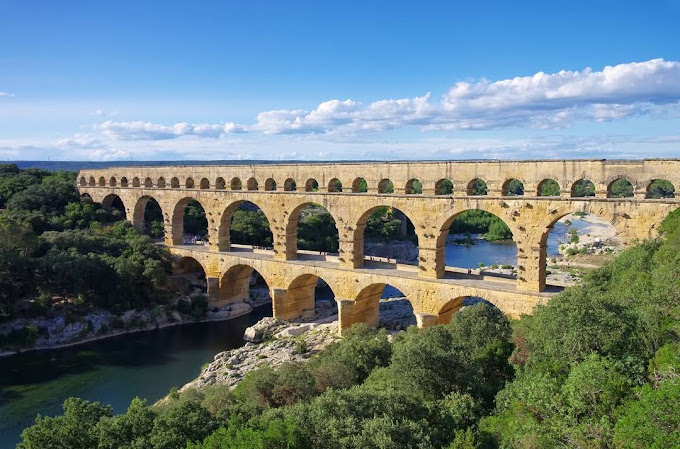
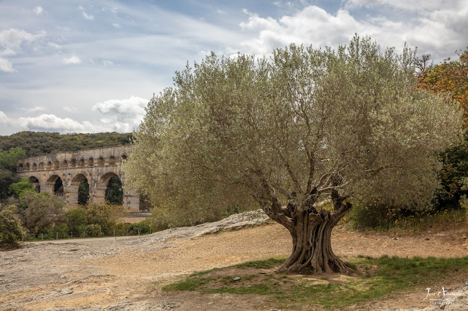
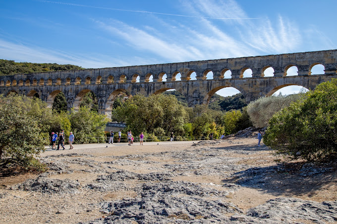

TOURIST SPOT
PONT DU GARD
• The Pont du Gard is an ancient Roman aqueduct bridge built in the first century AD to carry water over 50 km to the Roman colony of Nemausus.
• It crosses the river Gardon near the town of Vers-Pont-du-Gard in southern France


